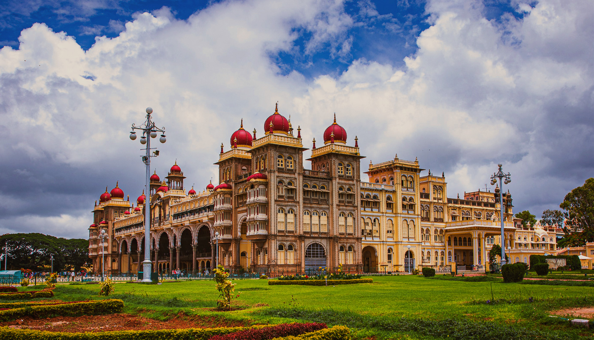

Popular Destinations in India
Taj Mahal, Agra

The Taj Mahal, located in Agra, is a UNESCO World Heritage Site and one of the Seven Wonders of the World. Built by Mughal
Emperor Shah Jahan in memory of his beloved wife Mumtaz Mahal, the monument is a stunning example of Mughal architecture, blending
Persian, Islamic, and Indian styles. The iconic white marble mausoleum is adorned with intricate inlay work and surrounded by beautiful
gardens, reflecting pools, and impressive gateways. The Taj Mahal attracts millions of visitors each year and symbolizes eternal
love and devotion
Jaipur, Rajasthan

Jaipur, the capital of Rajasthan, is often referred to as the "Pink City" due to the distinct color of its buildings. Founded
in 1727 by Maharaja Sawai Jai Singh II, Jaipur is known for its rich history, vibrant culture, and stunning architecture
.Major attractions include the Hawa Mahal, City Palace, and Amer Fort, each showcasing exquisite craftsmanship. The city is also famous for its
bustling markets, offering traditional handicrafts, textiles, and jewelry. Jaipur is part of India's Golden Triangle tourism
circuit, alongside Delhi and Agra.
Goa

Goa, located on the southwestern coast of India, is famous for its pristine beaches, vibrant nightlife, and rich Portuguese
heritage. Known as a top tourist destination, Goa offers a blend of relaxation and adventure, with options for water sports,
beach parties, and cultural festivals. Visitors can explore historic churches, such as the Basilica of Bom Jesus, and indulge in local cuisine,
known for its seafood and unique flavors. Goa's laid-back atmosphere, stunning landscapes, and colorful markets make it a
beloved destination for both domestic and international tourists.
Kerala

Kerala, known as "God's Own Country," is a southern Indian state famous for its lush landscapes, serene backwaters, and diverse
culture. With its picturesque hill stations, like Munnar, and tranquil beaches, such as Varkala and Kovalam, Kerala is a
>paradise for nature lovers and adventure seekers alike. The state is also known for its rich traditions, including Kathakali dance and Ayurveda
wellness practices. Visitors can experience houseboat cruises on the backwaters of Alleppey and savor the delicious local
cuisine, which is characterized by coconut, spices, and seafood.
Varanasi, Uttar Pradesh

Varanasi, one of the oldest inhabited cities in the world, is located on the banks of the Ganges River in Uttar Pradesh. It
is considered a sacred city for Hindus, who believe that dying here and having one’s ashes scattered in the Ganges can lead to
liberation from the cycle of rebirth. The city is known for its ghats, where rituals and ceremonies take place, particularly the Ganga Aarti,
a mesmerizing evening ritual of light and prayer. Varanasi is also famous for its narrow winding streets, vibrant markets,
and rich cultural heritage, including classical music and silk weaving
Leh-Ladakh
Leh-Ladakh, situated in the northernmost region of India, is renowned for its breathtaking landscapes, rugged mountains, and
unique Buddhist culture. Surrounded by the Himalayas and Karakoram ranges, Ladakh offers stunning vistas, high-altitude lakes
like Pangong Tso, and ancient monasteries, such as Hemis and Thiksey. The region is a haven for adventure enthusiasts, offering trekking,
river rafting, and mountain biking opportunities. Ladakh's distinct culture, influenced by Tibetan Buddhism, is reflected in its
festivals, cuisine, and warm hospitality of the locals.
Andaman and Nicobar Islands

The Andaman and Nicobar Islands, an Indian archipelago in the Bay of Bengal, are known for their stunning beaches, crystal-clear
waters, and rich marine biodiversity. Popular for their pristine natural beauty, these islands offer activities like snorkeling,
scuba diving, and exploring coral reefs. Havelock Island, with its famous Radhanagar Beach, is a popular destination for beach
lovers and adventure seekers. The islands also have a unique tribal heritage and historical significance, particularly the Cellular
Jail in Port Blair, which serves as a reminder of India’s struggle for independence.
Mysore, Karnataka

Mysore, located in Karnataka, is known for its royal heritage and vibrant culture. The city is famous for the magnificent Mysore
Palace, a stunning example of Indo-Saracenic architecture and the residence of the Wadiyar dynasty. Mysore is also renowned for
its Dasara festival, celebrated with grandeur and showcasing traditional processions, music, and dance. Visitors can explore the
lush gardens of Brindavan and the Chamundi Hill, which offers panoramic views of the city. Mysore is also famous for its silk sarees
and sandalwood products, making it a culturally rich and attractive destination.